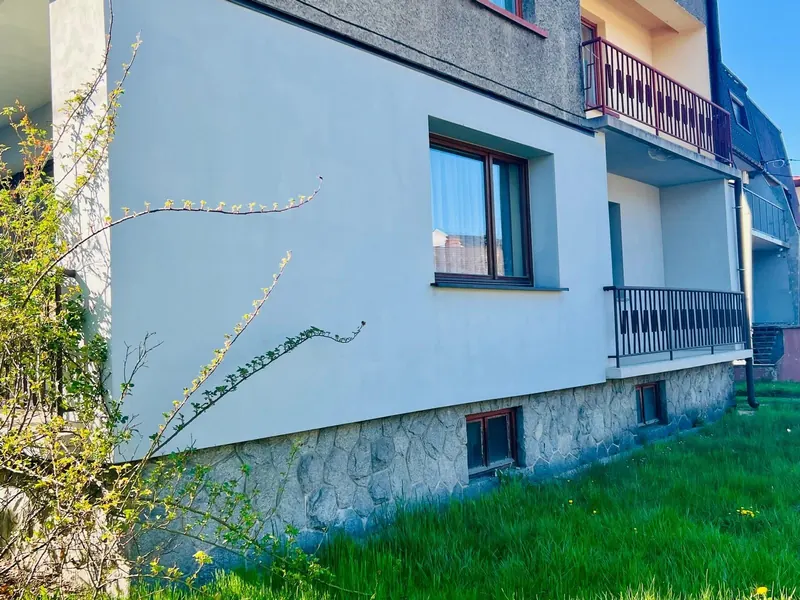

Realizacja 01 · Nowy TargTermomodernizacja i nowa instalacja grzewcza
- Obiekt
- Dom jednorodzinny, Nowy Targ.
- Problem
- Ogrzewanie kotłem węglowym i wysokie koszty ogrzewania.
- Co zrobiłem
- Wyliczenie sposobu izolacji termicznej i nadzór nad wykonaniem
- Projekt nowej instalacji grzewczej dopasowanej do budynku
- Wymiana źródła ciepła z węglowego na gazowe
- Uruchomienie i regulacja instalacji
3×
niższe koszty ogrzewania